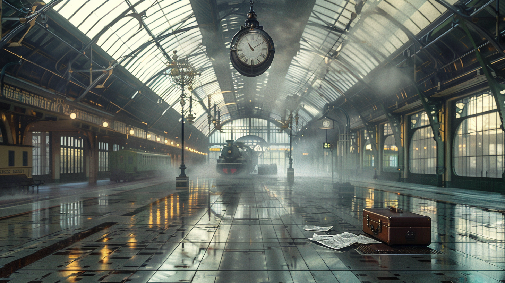

For a moment I thought that Richard Madden might in some way have divined my desperate intent. At once I realized that this would be impossible. The advice about turning always to the left reminded me that such was the common formula for finding the central courtyard of certain labyrinths. I know something about labyrinths. Not for nothing am I the great-grandson of Ts’ui Pen. He was Governor of Yunnan and gave up temporal power to write a novel with more characters than there are in the Hung Lou Meng, and to create a maze in which all men would lose themselves. He spent thirteen years on these oddly assorted tasks before he was assassinated by a stranger. His novel had no sense to it and nobody ever found his labyrinth.
Under the trees of England I meditated on this lost and perhaps mythical labyrinth. I imagined it untouched and perfect on the secret summit of some mountain; I imagined it drowned under rice paddies or beneath the sea; I imagined it infinite, made not only of eight-sided pavilions and twisting paths but also of rivers, provinces, and kingdoms. I thought of a maze of mazes, of a sinuous, ever-growing maze which would take in both past and future and would somehow involve the stars.
I foresee that man will resign himself each day to new abominations, that soon only soldiers and bandits will be left. To them I offer this advice: whosoever would undertake some atrocious enterprise should act as if it were already accomplished, should impose upon himself a future as irrevocable as the past.Thus I proceeded, while with the eyes of a man already dead I contemplated the fluctuations of the day which would probably be my last, and watched the diffuse coming of night.
The train crept along gently, amid ash trees. It slowed down and stopped, almost in the middle of a field. No one called the name of a station. “Ashgrove?” I asked some children on the platform. “Ashgrove,” they replied. I got out.
A lamp lit the platform, but the children’s faces remained in shadow. One of them asked me, “Are you going to Dr. Stephen Albert’s house?” Without waiting for my answer, another said, “The house is a good distance away, but you won’t get lost if you take the road to the left and bear to the left at every crossroads.” I threw them a coin—my last—went down some stone steps, and started along a deserted road. At a slight incline the road ran downhill. It was a plain dirt way, and overhead the branches of trees intermingled, while a round moon hung low in the sky as if to keep me company.